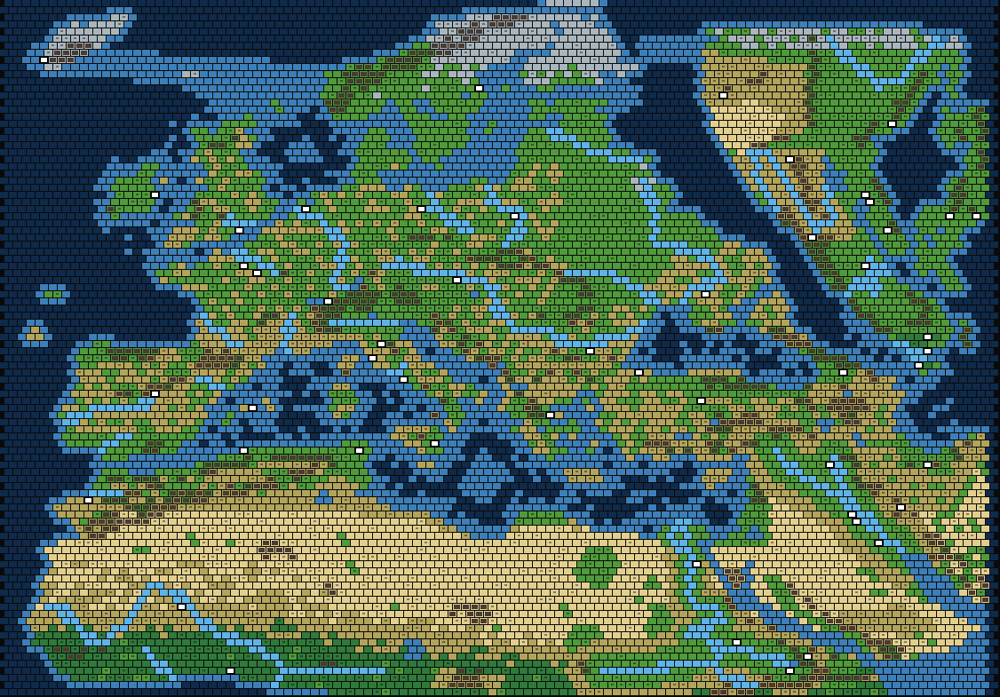
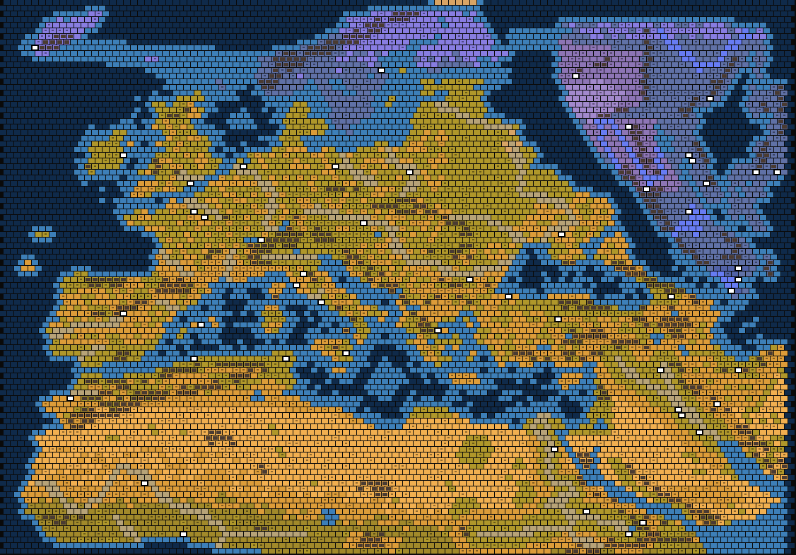
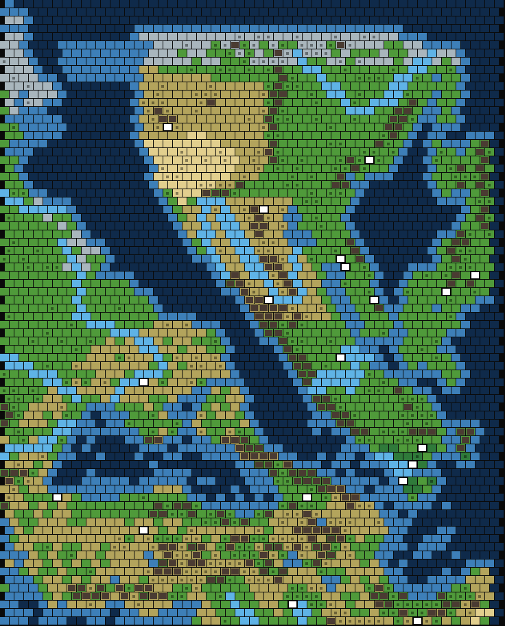

What it is
The mod adds map types that reproduce the real geography from the Urals to Iceland and from the Gulf of Guinea to the Persian Gulf. Coastlines, seas, straits, lakes, mountain ranges, biomes, rivers and volcanoes are drawn as longitude and latitude data and projected onto the hex grid when a game starts, so the same geography works at every supported grid size. The Arctic and the Sahara are compressed vertically to give Europe and the Mediterranean the room they deserve, and the Sahel, Ethiopia and Arabia are still there for Aksum, Songhai and the Middle East.
There are four map types, in two pairs: Europe & Mediterranean, and Eurasia Compressed, each with and without Distant Lands. Every one comes in three sizes of its own: 112x98 (12 players by default), 128x112 (14) and 144x126 (15).
Europe & Mediterranean (Distant Lands)
Europe, the Mediterranean and North Africa down to the Sahel, Ethiopia and Arabia. Africa, Scandinavia and Iceland are Distant Lands across the water, so the Exploration Age treasure fleets and distant-lands legacy paths work as the game intends.
Europe & Mediterranean (One Landmass)
The same map with no Distant Lands: every civilization can be reached overland from turn one. The two channels that only exist to separate the Distant Lands are gone, so Finland joins Russia and Egypt joins the Levant over Sinai. The Exploration Age treasure and military legacy paths cannot score here, because both count only in Distant Lands.
Eurasia Compressed
Russia, the North Caucasus and the Caspian become an Eastern Ocean, and China, Korea, Mongolia and Japan lie beyond it, where the East Asian civilizations start. No Distant Lands: East Asia is simply across the sea. More below.
Eurasia Compressed (Distant Lands)
The same geography, with East Asia, Scandinavia and Iceland as Distant Lands across the water, reached in the Exploration Age. Africa is home land on this map.
Rivers
On Civilization VII 1.5 every river is painted hex by hex, the way the game's own Earth map draws its rivers, instead of being left to the random river generator. The great rivers run where they really run and are navigable from their mouths: the Nile and its Rosetta branch, the Niger, Danube, Rhine, Seine, Thames, Rhone, Vistula, Oder, Dnieper, Dniester, Daugava, Volga, Tagus, Ebro, Guadalquivir, Euphrates and Tigris, among others. Rivers that were never great waterways stay minor: the Tiber, Garonne and Don, and the Po is navigable only near its mouth.
- No two games alike. A course bends through a neighbouring hex here and there, the navigable stretch can end a hex or two short of the source, and short minor headwaters sometimes climb beyond it.
- Minor rivers are generated from wet high ground and run downhill to the sea or into a bigger river. There are fewer across the Ukrainian steppe, and none in the Egyptian and Nubian desert, where the Nile has no tributaries.
- Gentle valleys. Rivers sit at the level of the land around them rather than in gorges; the ground is lowered only where a river would otherwise run uphill.
- No river crosses a mountain range. Rivers never run on mountains, and every hex of a mountain pass is kept free of them, so no river flows through a pass from one side of a range to the other.
- Rivers survive saving and reloading, and ships sail up the navigable ones.
Recent geography
- North Cape passage. A coastal channel along Norway's Arctic coast, so ships can sail from the Norwegian Sea to the Barents and White Seas and on through the Karelian passage to the Gulf of Finland.
- The Alps are a wall of mountains round the top of Italy, from the Maritime Alps at the coast to the Karst above Trieste, with three ways through: along the Riviera coast into France, the Brenner into Austria, and in the east a narrow gate at Trieste - along the coast into Istria and up through the Karst at Postojna to Ljubljana. Beyond the wall lies a band of high hill country about six hexes deep; Switzerland opens north and west through the hills of the Jura and the Black Forest, and a line of mountains keeps it apart from Austria south of Lake Constance. No river crosses the wall.
- The Apennines are a ridge of hills down the length of Italy with a rocky peak here and there, leaving the rest of the peninsula open farmland.
- The Carpathians are high in the Tatra, the Southern Carpathians and Rodna, and a lower, crossable ridge everywhere else.
- The Nile valley is a green ribbon about one hex either side of the river, and the delta a triangle from Memphis to the coast, instead of a broad green band through the desert. The navigable Nile and its floodplains keep Egypt well fed.
- Ukraine keeps the Dnieper, Dniester and Don but has fewer small streams.
Eurasia Compressed
The same Europe, Mediterranean and Africa, with the far side of the continent brought within reach. Russia, the North Caucasus, the Caspian and the Central Asian steppe are an Eastern Ocean, and in the space it frees lie China, Korea, Manchuria, Mongolia and Japan, drawn from real coastlines and fitted to the map.
- What stays of Europe. Everything west of Russia's borders: Finland, the Baltic states, Belarus and all of Ukraine, with a strip of Russian land round the Sea of Azov and the Kuban. The South Caucasus stays too; the new coast runs along the Greater Caucasus crest, north of Elbrus, and down the shores of Azerbaijan and Iran.
- Two sea routes to Asia. In the north the Gulf of Finland opens into the Eastern Ocean, so ships sail from the Baltic straight to Asia. In the south the Sea of Azov opens into it up the Don past Rostov: Black Sea, Kerch, Azov, Asia. Finland and Scandinavia are their own landmass, across the Gulf from Estonia.
- East Asia. China proper has most of the room, with the Yellow River, the Yangtze, the Amur and the Red River, the Qinling, Taihang and Greater Khingan ranges, the North China Plain and the Loess country, and the subtropical south. Mongolia reaches west to the Khangai and Karakorum, with the Gobi below it. Siberia, which has no part in the game's history, is only a narrow band of taiga along the top. Korea and Japan are drawn larger than true scale so there is room for their civilizations; Fuji and Paektu are there as volcanoes.
- Suez. The canal runs where the real one does, from Port Said to Suez, so ships pass from the Mediterranean to the Red Sea and Sinai belongs to Asia.
{kind=link}

{kind=link}

{kind=link}

On both Eurasia maps the East Asian civilizations start at home, and so does everyone whose home the ocean took:
| Age | Starts that differ from the Europe & Mediterranean maps |
|---|---|
| Antiquity | Han (Chang'an), Heian (Kyoto), Silla (the upper Nakdong), Khmer (the Red River delta) |
| Exploration | Ming (Nanjing), Sengoku (Kyoto), Goryeo (Kaesong), Mongolia (Karakorum), Dai Viet (Thang Long, Hanoi) |
| Modern | Qing (Beijing), Meiji (Tokyo), Joseon (Seoul), Siam (Guangzhou), Russia (Vladivostok) |
Screenshots
Rendered from the mod's map preview on the 112x98 grid. Green is grassland, olive is plains, sand is desert, grey is tundra, dark green is tropical; dots mark hills, triangles mountains, red dots volcanoes, light blue the river courses. White circles are historical starts, orange circles the curated fallback sites.


Historical start locations
Every civilization of every age has a true start: pick the one that begins where you want your empire to end up. Only one age is ever live, so the ages share their sites on purpose. Civilizations with no historical business in Europe are stand-ins, each holding a region the map would otherwise leave empty, chosen by terrain and matched to what their abilities care about: Inca and Nepal in the Caucasus (mountain settlements), Hawaii on Sicily (island settlements), Buganda in the Ethiopian highlands (lakes), Tonga on Mallorca, Chola on the Gulf of Guinea beside Songhai, Mexico at Rabat. The table is for the Europe & Mediterranean maps; the Eurasia maps move the East Asian civilizations home (see above). Anyone left over settles a curated historical site, London and Dublin first, then Kyiv, Uppsala, Fez, Krakow, Trondheim, Copenhagen, Marrakesh and 86 more.
| Age | Civilizations and their starts |
|---|---|
| Antiquity | Rome (Rome), Gaul (Lausanne), Etruscans (Populonia), Greece (Thermaic Gulf), Byzantium (Constantinople), Carthage (Carthage), Egypt (Memphis), Assyria (Nineveh), Babylon (Babylon), Persia (Susa), Aksum (Axum), Mississippian (Uppsala), Heian (Dublin), Maurya (Madrid), Han (Kyiv), Maya (Berlin), Khmer (Bucharest), Silla (Ankara), Tonga (Mallorca) |
| Exploration | England (London), Byzantium (Constantinople), Etruscans (Populonia), Tuscany (Florence), Bulgaria (Veliko Tarnovo), Spain (Madrid), Norman (Rouen), Abbasid (Baghdad), Iceland (Reykjavik), Mongolia (Sarai on the lower Volga), Songhai (Gao), Pirate Republic (Algiers), Sengoku (Copenhagen), Majapahit (Dublin), Chola (Lagos), Goryeo (Athens), Dai Viet (Alexandria), Inca (Tbilisi), Hawaii (Syracuse), Shawnee (Warsaw), Ming (Moscow) |
| Modern | Great Britain (London), America (Dublin), French Empire (Paris), Prussia (Berlin), Russia (Moscow), Ottomans (Ankara), Qajar (Tehran), Byzantium (Constantinople), Etruscans (Populonia), Mexico (Rabat), Joseon (Athens), Meiji (Uppsala), Qing (Vienna), Siam (Naples), Mughal (Warsaw), Nepal (Tbilisi), Buganda (Gondar) |
Gaul, England and Babylon arrived with Civilization VII 1.5 and sit exactly where they belong, so the British line can be played from where it happened: Gaul by Lake Geneva, England on the Thames, then Great Britain or America.
Civilizations from Workshop mods get starts too when they are installed: Scythia (Kamianka), Kush (Meroe), Sumer (Ur), Austria-Hungary (Vienna) and the Dutch Republic (Amsterdam).
Byzantium, the Etruscans and Tuscany are civilizations from the same repository; their starts apply when those mods are installed. Those three mods also give their civilizations true starts on the base game's own Earth map.
Game version
The map is built for Civilization VII 1.5.0, which added the calls the map uses to paint each river where the geography puts it. It still works on older versions: the map checks for those calls when it generates, and if they are missing it falls back to the rivers it used before 1.5, where the game models rivers along the drawn courses and decides for itself which ones are navigable. Everything else about the map is the same on either version. For a game older than 1.5, the last release built for it is v6.
Known issue: Civilization VII 1.5 wraps this map east to west even though the map asks it not to, so a ship that sails off the Atlantic edge comes out at the far east of the map. The map script cannot turn that off.
The map texts are translated into all twelve languages the game ships.
Install
- Get the files:
git clone https://github.com/marcobonechi/civ7mods.git, or use Code → Download ZIP on GitHub and unpack it. - Copy the
EuropeMediterraneanfolder into the game's Mods folder:Windows: %LOCALAPPDATA%\Firaxis Games\Sid Meier's Civilization VII\Mods macOS: ~/Library/Application Support/Civilization VII/Mods
- Restart the game. It reads mods only at startup and enables new ones automatically. After updating the mod, check Additional Content → Add-Ons: the game can leave an updated mod switched off.
- In game setup choose one of the four map types listed above; each brings its own three sizes.
The repository also holds the Byzantium, Etruscans and Tuscany civilizations, a browser-based geography editor with live preview, and the scripts that rebuild the previews and these screenshots. The screenshots above come from that preview, which draws the drawn river courses but not which parts are navigable; the Eurasia Compressed pictures are rendered straight from the map data.